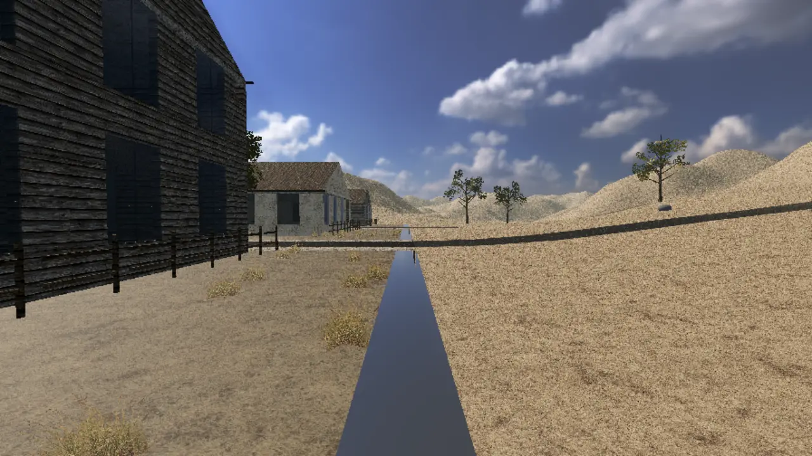
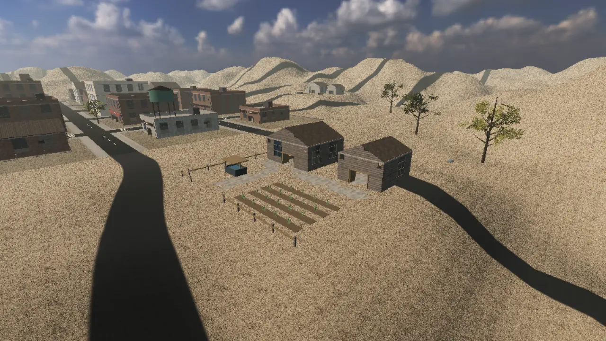
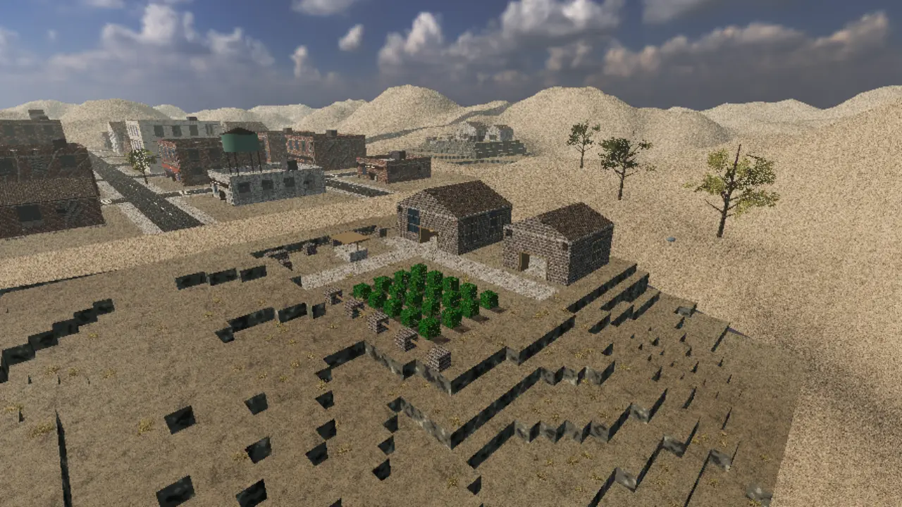
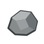
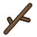
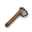
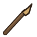

Версия 0.80.3: Вешалка-стойка и обувница для прихожей дома
. Для прихожей первого дома города добавлены вешалка-стойка из гнутого дерева и обувница в двух видах: откидная тумба на три отделения и решётчатые полки.
Город Ржавый Бор. Электричества нет, связь только по локальной сети.
Кооперативное выживание от первого лица на Godot 4.7 .NET. Город из 34 зданий разбирается по блоку, начинать приходится с голыми руками, а по улицам бродят заражённые. Играть можно одному или вместе, до 8 человек по локальной сети.
Поиграть можно уже сейчас: игру раздаёт Telegram-бот. Откройте бота, выберите систему и получите сборку. Она ранняя, поэтому мы ждём ваши отчёты о вылетах и багах.
Нажмите кнопку ниже и в Telegram жмите «Запустить». Регистрация не нужна.
Windows 10 или 11, либо Mac на Apple Silicon. Бот пришлёт архив около 0,8 ГБ.
Игра пока без цифровой подписи. Бот покажет, как убрать предупреждение системы.
/bug: он передаст отчёт разработчикам и ответит вам./mute.Бот хранит ваш Telegram-id, ник и выбранную систему, чтобы присылать новые версии и разбирать отчёты.
Что менялось в каждой сборке: механики, исправления, файлы и проверки. Записи идут по дням разработки, от прототипа 0.0 до 0.80.3. Нажмите на запись, чтобы раскрыть подробности.
. Для прихожей первого дома города добавлены вешалка-стойка из гнутого дерева и обувница в двух видах: откидная тумба на три отделения и решётчатые полки.
. Для спальни первого дома города сделана двуспальная кровать с высоким изголовьем, покрывалом-шотландкой и двумя подушками: свежезастеленная и потрёпанная в духе России 2000-х.
. Автор вручную довёл хват ещё пятнадцати предметов, теперь их тридцать три, и выставил урон двадцати шести предметам; сам код игры не менялся.
. В игре появилось 25 новых вещей группы «еда»: десять видов консервов, десять видов обычной еды и пять видов сырого мяса, а у 19 ёмкостей есть вторая модель с водой.
. Для домов города сделана газовая плита с откидной дверцей духовки и ящиком: выключена, с огнём на одной, двух или всех четырёх конфорках, чистая и потрёпанная в духе России 2000-х.
. Вязаная шапка, кепка и любая вещь для головы теперь скрывают причёску целиком, включая хвост, косу и длинные волосы, а после снятия возвращается выбранная и окрашенная причёска.
. Десять новых причёсок из 0.75.0 больше не лежат в памяти все сразу: загружается только выбранная, а зомби берут причёску из короткого списка недорогих.
. В игре появилось строительство из деталей на сетке 3 м: фундамент, стена, проём и перекрытие ставятся с предметом «Проект» в руке, а действия выбираются круговым меню на правую кнопку мыши.
. Для лута, плиты, готовки, крафта и стройки отдельных анимаций делать не будут: выживший чуть наклоняется вперёд и перебирает руками перед собой, а предмет из рук на время работы убирается.
. Причёсок теперь тринадцать и вариант «Без волос», набор один на оба пола.
. Школьный и военный рюкзаки и поясная сумка теперь с готовыми моделями на персонаже и на земле, а к одежде добавилась бейсболка с козырьком.
. К одежде добавились брюки, фланелевая рубашка, худи с капюшоном, рабочая куртка и вязаная шапка с отворотом, а любую вещь одежды можно взять в руки: она лежит рулоном цвета вещи.
. Джинсы и носки двух длин строятся прямо по форме тела персонажа, а под одеждой больше не пропадают в тени ноги и торс.
. По решению автора обмотки убраны из игры вместе с рецептом: вместо них есть обычные носки и длинные до колена.
. Рабочие перчатки сделаны заново по форме кисти персонажа: они повторяют пальцы и плотно облегают руку, вместо прежних «рваных», которые закрывали кисть клочками.
. У одежды с моделью значок в инвентаре теперь снимок самой вещи в её цвете, как в DayZ, а ячейки надетого в окне «Одежда» показывают эти значки вместо цветных квадратов.
. Футболка больше не просвечивает кожей и бельём, у каждой ткани своя палитра выцветших цветов, добавлены длинные носки, а персонаж появляется в белье вместо квадратного рюкзака на спине.
. Первые четыре вещи одежды получили модели и видны на выжившем: в окне инвентаря и от третьего лица, а перчатки ещё и на руках от первого лица.
. Автор вручную довёл хват алюминиевой и эмалированной мисок, ветки, хлебницы, кирпича и ведра.
. Автор вручную довёл хват ещё трёх предметов: бинокль поправлен, а бутылка отбеливателя и книга получили свой хват.
. Ещё два предмета в руках доведены автором вручную: пальцы ложатся на корзину и бинокль, а не торчат в воздухе.
. Автор вручную довёл, как персонаж держит несколько предметов, и игра берёт этот хват вместо автоматической подгонки: пальцы ложатся на предмет, а не торчат в воздухе или сквозь него.
. В одну ветку собраны работы обоих разработчиков: старт мира перестал тормозить, на встроенной видеокарте выставка больше не роняет игру, зомби получили позы и реакции, а хват предметов начали доводить вручную.
. В игре появилась одежда первого этапа: она даёт карманы, защищает от укусов зомби по зонам тела, греет, снашивается и чинится. Моделей на персонаже у неё пока нет.
. Из игры ушёл старый интерфейс, которого уже не было на экране. Для игрока ничего не меняется: ни вид, ни управление.
. Весь список замечаний автора по держанию предметов пройден заново: каждый из 87 предметов проверен по одному и снят в игре.
. Ящик, аптечка, канистры, ведро и утюги висят низом вниз и не заходят в тело, кружки и чайники держатся за боковую ручку, пилы, половник и фонарики смотрят рабочим концом вперёд.
. На встроенных видеокартах игра падала при загрузке мира: не хватало видеопамяти. Теперь текстуры сжаты, а выставка грузится только рядом с игроком.
. В юго-восточном углу города появилась площадка с блоками, предметами, мебелью, дверями и образцами материалов, а зомби теперь замахивается 0,4–0,6 с, и удар можно отбить.
. Бой с зомби разбирается на голову, корпус, руки и ноги, удар засчитывается на кадре касания, а клавиша ~ открывает консоль разработчика.
. Боевой профиль любого предмета теперь вычисляется из его веса, материала, формы и длины, поэтому драться можно всем, что есть в игре.
. Собрана библиотека зданий из фотосканов и 30 видов открывающихся дверей, окон, ворот и люков; в игру добавлены девять предметов-обломков.
. Стену, перекрытие, крышу, окно, тротуар и асфальт ломают предметом в руке, удерживая ЛКМ, так же как рубят дерево.
. Лесной процедурный мир убран, «Своя игра» всегда создаёт или продолжает город, а демо к Новому году называется АЛЬФА-1 и строится из города.
. Мультяшный HUD заменён экраном с белыми контурными значками, окно по Tab получило вкладки «Инвентарь», «Крафт» и «Тело», главное меню собрано на одной тёмной теме.
. Пальцы обхватывают рукоять по толщине, камень лежит в горсти, резак в щепоти, а ЛКМ бьёт тем, что в руке: молоток, срез, копание, толчок, тычок, рубящий замах.
. Предметы получили модели из сканов Poly Haven (CC0) и Sketchfab (CC-BY) в реальных размерах, а авторов моделей видно в главном меню.
. Eksailed переписал ближний бой: типы урона, силовой замах, добивание, блок и толчок; lerk одел землю и траву в фотоскены и сделал вытаптываемые тропы.
. Детальное управление рендером во вкладках «Графика», «Эффекты» и «Зомби», предзапекание сеток заражённых при загрузке мира и защита входных дверей от перекрытия перегородками.
. Падающий ствол наносит урон игрокам и убивает зомби, вокруг упавшей кроны появляются собираемые сучья, а листва срезается каменным резаком с верхушки поваленного дерева.
. Предметы перестали быть кубиками и коробками: у всех 14 предметов появились составные 3D-модели в реальных размерах каталога, физическая укладка на широкую грань и точный хват по костям кисти.
. Выживший начинает с пустыми руками: сбор камней, веток и волокна по клавише F, цепочка первого крафта с нерасходуемым каменным резаком и объединение с погодой, строительством и ИИ зомби.
. Объединение соседних плоских граней городских блоков сократило сетку чанков с 421 тыс. до 185 тыс. треугольников, окраины разделены на сектора 64×64 м, а невидимые зомби усыпляют скелеты.
. Движущиеся по ветру облака и дождевые тучи с молниями, строительство и укрепление базы из дерева/камня/металла с накладками на грани, память цели и замах удара у зомби.
. Деревья больше не исчезают мгновенно: после серии ударов топором ствол падает от игрока, оставляя пень, а древесина добывается разделкой поваленного бревна.
. Заражённые переведены на процедурно генерируемую внешность с архетипами, характерной позой вытянутых вперёд рук, оптимизацией кадров и исправлением тени от 1-го лица.
. Реализация этапов 1–3 плана первого крафта: отказ от стартового снаряжения, ручной подбор камней, веток и волокна, новые рецепты и раскладка мелочи в мире.
. Из интерфейса и дизайна игры навсегда убраны 7-дневные кровавые орды, а для системы одежды утверждены 17 зон защиты, слои в духе Project Zomboid и 14 вещей демо.
. Два крупных обновления: информативный экран загрузки вместо серого экрана с очисткой верха HUD, а также полноценный стелс-ИИ зомби с конусом зрения и затуханием звука сквозь стены.
. Исправлено неестественное выпячивание груди в стойке покоя и загибание голеней назад при прыжке.
. Полноценный редактор анатомии на базе морфов MakeHuman: 134 параметра в 14 категориях, прямое перетаскивание 16 зон тела мышью, изменение роста ±13 см и быстрое запекание сетки.
. Устранена широко расставленная стойка «рогаткой» — стопы сведены на ширину таза, колени смотрят по направлению носков.
. Выровнена осанка в покое без наклона корпуса вбок, а пустые руки получили полноценную боевую стойку и серии ударов кулаками вверх, прямо и вниз.
. Полный переход со стилизованных анимаций Quaternius на настоящий мокап живых актёров CMU с идеальной постановкой стоп без скольжения и физическим падением предметов на землю.
. Выбранный в меню выживший появляется в мире со своим телом, руками от 1-го лица и внешностью для всех игроков по сети, а хост хранит отдельный прогресс под каждого персонажа.
. Создание и хранение до 12 выживших на мужской и женской модульных основах с выбором черт, цветов и интерактивным вращением 3D-модели.
. Полностью переработанное главное меню с вкладками «Своя игра» и «Подключение», выбором профиля сохранения и адаптивной вёрсткой, а также подготовка мужской и женской 3D-основ.
. Устранена щель на отрицательных границах города с пустыней, полы ферм и бетонные подъезды подняты над грунтом, а дорожное покрытие защищено от выкапывания лопатой.
. Кэширование высот столбцов, общие вершины рельефа и городских поверхностей, очередь пересборки чанков с бюджетом 4 мс и устранение лишних перерисовок HUD.
. Убраны метровые ступени земли вокруг сельских участков, добавлены точные коллизии машин и мебели, выезды из города продлены до края карты, а по TAB персонаж опускается на колено перед рюкзаком.
. Перевод всех показателей выживания и расходников под авторитетный расчёт хоста (формат сохранения 3), генерация 10 фермерских хозяйств с 20 строениями и переход на постепенную добычу ресурсов инструментами.
. Ликвидированы утечки солнечного света на стыках стен и перекрытий и исправлены застревания о перила.
. Бесшовный подъём по лестницам на верхние этажи зданий, выверенные переходы площадок и точное примыкание входного крыльца.
. Полноценное внутриигровое меню настроек графики, звука и управления с пресетами качества и оптимизацией шейдеров деревьев и травы.
. Крупнейшая архитектурная и графическая переработка: уход от метровых кубических стен к реалистичным стенам 28 см, покатым крышам с фронтонами, PBR-окружению и интерактивной карте города.
. Первичная генерация городской карты на 144 чанка с планировкой улиц, кварталов и 34 зданий на базовой воксельной сетке.
. Подключение единого атмосферного комплекса HUD (Ashfall) с мостом синхронизации показателей выживания, инвентаря, хотбара и статусов.
. Панель горячих клавиш больше не занимает место на экране постоянно и вызывается по нажатию F1 или H.
. Добавлены навигационный компас со сторонами света, индикатор заметности и шума в приседе, вертикальные шкалы выживания и обновлённый хотбар.
. Корректная очистка состояния пиров и закрытие соединений без ошибок в логах при выходе клиента или остановке сервера.
. Первая полноценная система создания предметов по рецептам с категориями, сетевой синхронизацией ударов и позы открытия рюкзака, а также прокруткой чата.
. Слияние наработок обоих разработчиков в единую сборку: система выживания (HP, стамина, голод, жажда) объединена с новой скелетной моделью, плавными анимациями, боем и сохранениями на хосте.
. Авторские анимации перенесены на скелет и плавно смешиваются по скорости и направлению движения; добавлены тактические наклоны из-за укрытий, свободный поворот головы и согласованные руки 1-го лица.
. Ранний составной персонаж из примитивов заменён полноценной анатомической сеткой человека с одеждой, рюкзаком и скелетным ригом.
. Два фундаментальных этапа 0.8.0 в параллельных ветках: система жизненных показателей и расходников + серверное сохранение мира и игроков, ближний бой и первые серверные зомби.
. Устранено неестественное вращение пучков травы и скорректирован оттенок крон лесных деревьев.
. При разрушении блоков земли больше не просвечивают пустоты, трава плотно сидит на рельефе, а деревья получили объёмную форму.
. Воксельный рельеф переведён со ступенчатых кубиков на плавно сглаженную поверхность с трипланарным смешиванием текстур земли и камня и процедурной травой.
. Добытые и выброшенные предметы падают под действием гравитации и останавливаются на поверхности земли.
. Иконки всех предметов ровно вписаны в ячейки слотов при любом масштабе интерфейса.
. Добавлен графический набор иконок для ресурсов, инструментов и припасов.
. Появление 8 слотов быстрого доступа (клавиши 1–8 и колесо мыши), рюкзака на 24 слота (TAB), выпадающих при добыче предметов и перетаскивания стопок.
. Выверены пропорции головы, торса и длины ног выжившего под реальный рост взрослого человека 1,82 м относительно метровой сетки мира.
. Добавлена возможность в любой момент переключаться между видом из глаз и камерой из-за плеча для осмотра своего персонажа.
. Переход от разрозненных узлов к настоящему скелетному ригу с креплением оружия к кости кисти и экспортом в GLTF.
. Модель рук перед камерой получила отдельные фаланги пальцев, тактические перчатки, поддержку левой и правой руки и плавную кинематику.
. Воксельные блоки получили текстурный атлас вместо плоских цветов, а руки от первого лица — живую инерцию (sway & bob) при поворотах камеры и шагах.
. Капсулы игроков заменены первыми 3D-моделями выжившего и зомби, добавлен каменный топор и анимация замаха от первого лица.
. Общение между выжившими в кооперативе по клавише Enter/T с автоматическим затуханием неактивного окна.
. Первые 15 коммитов от пустого репозитория до рабочего кооперативного прототипа на Godot 4.7.NET (C#) с генерацией воксельного ландшафта, разрушением блоков и синхронизацией до 8 игроков.
Замеры в игре, seed 4242, Godot 4.7 .NET. Ржавая полоса показывает, как было, полоса хаки показывает, как стало.
Высота столбца чанка кэшируется и сбрасывается точечно, когда игрок копает землю или камень.
Соседние плоские грани одного материала сливаются в одну, а блоки всё так же разрушаются по одному.
Окраины поделены на участки 64×64 м, камера и каскады теней отсекают лишнее, скелеты невидимых зомби засыпают.
В два захода: в 0.20.1 убраны дубли вершин и нормалей, в 0.30.1 слиты плоские грани.
Текстуры моделей сжаты (BC1 и BC5, у мелочи 256–512 пикселей). Раньше на встроенных видеокартах память кончалась ещё при загрузке мира.
Выставка строится, только когда игрок ближе 50 м, и убирается дальше 80 м. После ухода память возвращается к 637 МБ.
Худший кадр в секундах 1–10 после появления (раньше 33–150 мс, теперь 6–9 мс). Значки предметов снимаются по требованию, а не все сразу при входе в мир.
Прогулка по всей площадке на карте с 512 МБ: раньше игра падала на пике 758 МБ, теперь выставка строится участками, ошибок видеопамяти нет.
Причёски грузятся по одной, только когда выбраны; у зомби короткий список недорогих причёсок.

На отрицательных границах городской сетки оставалась щель. В 0.20.2 рельеф пустыни выровнен и примыкает вплотную.


Ступенчатое воксельное основание сельских участков стало непрерывным гладким плато с коллизией.
Выживший появляется без снаряжения. Камни, ветки и волокно собираются руками по F, из них получаются первые инструменты. Все 14 предметов сделаны в настоящих размерах и лежат в ладони серединой. Версии 0.28.0–0.33.0. С тех пор каталог вырос: на выставке в городе стоит 138 предметов (0.49.0), а хват 87 предметов из списка автора проверен по одному (0.60.0).

Камень
Ветка Шнур
Каменный топор
Палка-копалка| Источник | Чем | Время | Что получаешь | Выносл. |
|---|---|---|---|---|
| Камень, валежник, сучья на земле | F | 0,5 с | 1 камень или 1 ветка, предмет исчезает | 0 |
| Сухая ветка на живом дереве | держать F | 1,5 с | 1 ветка, до 2 с дерева | 5 |
| Волокнистое растение | держать F | 2,0 с | 1 волокно, куст вырван целиком | 4 |
| Волокнистое растение | резак, ЛКМ | 0,8 с за пучок | 3 пучка волокна, остаются пеньки | 4 за пучок |
| Ствол взрослого дерева | топор, ЛКМ | 9 ударов, около 8 с | дерево падает (урон 60 стволом, 20 кроной) и даёт 2–3 сучка | 7 за удар |
| Поваленное бревно | топор, ЛКМ | 0,9 с за удар | 1 полено за удар, всего 6 | 7 за удар |
| Крона лежащего дерева, кусты, грядки | резак, ЛКМ | 1,0 с | листва, 4 пучка с верхушки дерева | 7 |
| Участок почвы 2×2 м | копалка, ЛКМ | 1,8 с | 1 земля, запас участка 6 | 7 |
| Куча металлолома | держать F | 3,0 с | 1 металлолом, запас кучи 5 | 7 |
Снимки из Godot 4.7 и рендеры лепки персонажа. Нажмите на кадр, чтобы открыть его целиком, стрелками можно листать.
Идеи механик и план к демо АЛЬФА-1 на Новый год 2027. Часть уже в игре (версии 0.27.0–0.47.0), часть сделана наполовину, остальные ещё проектируются.
Одежда в игре есть с 0.62.0: карманы, защита от укуса по 17 зонам, износ, дыры и починка. С 0.69.0 вещи видны на персонаже, с 0.70.0 они сидят без просвечивания и в своих цветах, с 0.72.0 джинсы и носки строятся по телу, с 0.73.0 так же сделаны брюки, рубашка, худи, куртка и шапка, а с 0.74.0 есть кепка, рюкзаки и поясная сумка с настоящими моделями. Автоматическое рвание одежды в кустах и выпадение содержимого оторванного кармана пока впереди.
Котёл, точильный станок, верстак, кузница и наковальня; перки позволяют готовить в поле со штрафом.
Навык и урон растут от реального использования. В игре уже растёт навык типа оружия в бою (тупое, колющее, рубящее, режущее, безоружный) до +50% урона; сила и бег впереди.
Улучшение только внутри семейства (дерево/камень/металл по 2 ступени) + защитные накладки на каждую грань.
Точечное пробитие дыр в блоках и стенах с возможностью заделать пробоину. Пока блок города ломается целиком предметом в руке, точки 4×4×4 ещё нет.
Костёр в закрытом помещении даёт дым и пожар, факел у деревянной стены поджигает её, тяжёлое ломает слабую опору.
Инструменты и оружие изнашиваются от ударов (топор 200, резак 150), затупленное бьёт слабее на 40%, точатся камнем в меню крафта, а у сломанного топора слетает головка. С 0.47.0 износ зависит от материала.
После серии быстрых приседаний мышцы ног устают: присед становится медленнее и шумнее.
Возраст растёт на 1 год за каждый игровой год: слабеют руки и ноги, снижается иммунитет вплоть до естественной смерти.
На бегу можно споткнуться о лежащие на земле камни и ветки и упасть с долгим подъёмом.
Энергетики временно повышают максимум, скорость и восстановление стамины с последующим откатом.
Рёв и ломающий преграду зомби вызывают страх: нельзя уснуть, пульс стучит, жажда +10%, скорость +5%, шанс промаха +10%.
Четыре вида заражённых: шаркун, хромой, дёрганый и тяжёлый, у каждого свои здоровье, скорость, походка и удар. Привязки видов к биомам пока нет: лес убран в 0.41.0, мир один.
Молния поджигает дерево; пожар из 10 деревьев порождает дымовую тучу и ливень, который тушит огонь.
Облака плывут по ветру и сбиваются в тучи; дождь и молнии идут строго под тучей, под крышей сухо.
Ветер и дождь постепенно старят и разрушают незащищённые крышей постройки и брошенные вещи.
Скоропортящаяся еда сохраняется в холодильнике, погребе, зимой или со льдом, а испорченная идёт на удобрение. С 0.80.0 у сырого мяса есть вторая модель, испорченное, но порча ещё не считается.
Зомби слышат шум с учётом затухания сквозь стены, поворачиваются и идут проверять последний известный источник.
Намокание под дождём снижает тепло одежды; костёр, камин, кровать и тёплая еда дают уровни комфорта и сушат.
Долгое монотонное повторение одного действия навевает скуку: слух и получаемый опыт снижаются на 10%.
Мини-игра с приближением камеры к замку двери; отмычка может сломаться и издать шум.
Двери заколачиваются досками; их можно сломать ударами или отломать инструментом, а голыми руками — риск занозы 50%.
Для ключевых рецептов персонаж вживую соединяет детали в руках (головка, рукоять и обмотка топора разделены в 0.32.0). С 0.76.0 есть общая поза работы руками на любое дело, а видимая сборка важных рецептов остаётся идеей.
Двойной учёт инвентаря: слоты (карманы одежды и сумки) + вес в килограммах. Слоты уже есть: у надетых вещей свои окна карманов, школьный рюкзак на 8 слотов и военный на 30; с 0.74.0 рюкзаки и поясная сумка видны на персонаже. Вес в килограммах впереди.
Тяжёлую мебель и технику один игрок тащит медленно в наклоне, а вдвоём с напарником несут за два края.
При переломе или вывихе ноги выживший хромает; напарник может подставить плечо и вести его.
В руке бьёт любой предмет: боевой профиль вычисляется из веса, материала, формы и длины (сковорода тупо, вилка колет, лом задевает соседей), хрупкое разбивается, металл изнашивается.
Городские блоки ломаются предметом в руке, без опоры рушатся (0.43.0). Столы, стулья и двери пока целы: их разбор на части и обломки-оружие впереди.
Погибший персонаж не возрождается, а встаёт полноценным зомби со своей внешностью, одеждой и всем лутом в карманах.
Сон восстанавливает выносливость и здоровье, снимает скуку и позволяет переждать ночь в безопасности.
Банки, бутылки и другие ёмкости можно наполнять из ручья, крана, унитаза и других источников. С 0.80.0 у 19 ёмкостей есть вторая модель с водой, но налить воду в игре пока нельзя.
К 2027-01-01 готова демо с авторской картой: разные биомы и минимум два города. Дома города будут готовыми разрушаемыми сценами целиком (решение автора 2026-10-13), первый дом 12 × 9 м с восемью комнатами.
Земля, стекло, листья и подобные материалы нельзя держать в руках и класть в хотбар (жёсткое правило).
Одна общая анимация употребления для любой еды и любого напитка; уточняем время, эффект, звуки.
Орды появляются ночью спустя дни выживания; режимы сложности по дню первой орды: 25, 16, 8, 3; днём орда спит в укрытии, ночью обходит маршрут и возвращается; слышит хуже обычных зомби, растёт с днями; одно сообщение игрокам.
Предметы стоят на мебели и падают при её движении с шумом, привлекающим зомби; дверцы и ящики открываются: F быстро и шумно, удержание F медленно и тихо.
Бросить бутылку или банку далеко, зомби идут на звук, игрок уходит в другую сторону.
Растяжка со шнуром и банками шумит при пересечении: предупреждает игроков и привлекает зомби.
Под ливнем зомби хуже слышат, гром маскирует шум, грозовая ночь удобна для шумной работы.
Перк тишины от практики; удар со спины тупым оглушает не заметившего зомби.
Весь шум базы суммируется и привлекает орду: генератор, ремонт, падение мебели, взлом.
Даёт свет и питание холодильнику, но шумит, требует топлива и в помещении даёт выхлоп.
Разбитая и оторванная мебель идёт на дрова для камина и костра; зимой отопление и комфорт.
Посев по сезонам, удобрение из испорченной еды, полив дождевой водой, урожай как еда со сроком годности.
Сушка, копчение и засолка продлевают срок годности еды без холода.
Верстак и материалы чинят блоки и мебель; перк растёт от ремонта, сборки и ломки мебели.
Бутылка с горючим и тряпкой: бросок поджигает цель и землю; риск пожара у себя.
Носилки вдвоём для раненого и окно спасения у упавшего до превращения в зомби.
Чтение даёт опыт перка или рецепт и снимает скуку; книги портит мокрость.
Когда все игроки легли спать, ночь пропускается до утра.
Глубокая проработка поведения зомби: восприятие, память, тревога, взаимодействие с миром, группа, виды, орда.
Удар по ногам сбивает зомби: он падает и случайно встаёт или ползёт и на время становится ползуном.
Подробные настройки мира при его создании: режимы сложности и отдельные параметры зомби, выживания, погоды, смерти.
Профессия, черты и стартовые навыки при создании персонажа, как в Project Zomboid.
Вещи, которые нельзя убрать в инвентарь и хотбар: несут в одной руке, вторая свободна, двуручное брать нельзя.
Всё строится с предметом «Проект» в руке: P показывает проекцию, второе P ставит, Esc отменяет, а правая кнопка мыши открывает круговое меню действия, детали и материала.
Первые 10 суток есть электричество и вода (свет, фонари, холодильники, краны, плита зажигается сама), потом резкое отключение; настройка мира.
Спички (20), зажигалка с бензином, огонь переносят любой палкой, факел; запасного способа огня нет; батарейка одна и не заряжается.
Плита, костёр или печь плюс посуда с ингредиентами и водой; блюдо порциями в кастрюле; около 15 рецептов; сроки еды без холода.
Кровотечение, перелом по частям тела, заражение, отравление, простуда; бинт, шину и отвары делают, остальное находят.
Настоящие травы и грибы, съедобные и ядовитые; весна–осень, грибы осенью; две книги подписывают действие.
Три сорта металла, кузница из городского кирпича, что куём; заводское находят и чинят, не делают.
Рюкзак из шкафов домов, корзина двумя руками (около 15 кг), бегать можно.
Ведро и таз надеваются на голову в инвентаре и закрывают вид.
Игрок не знает время и температуру воздуха: время по свету, температура по значку «холодно / комфортно / жарко», точные данные дают кварцевые и электронные часы на запястье.
В жилых домах очень редко есть подвал: вход — люк в полу, скрытый под ковром.